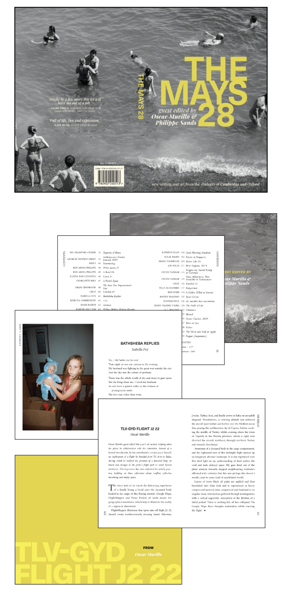
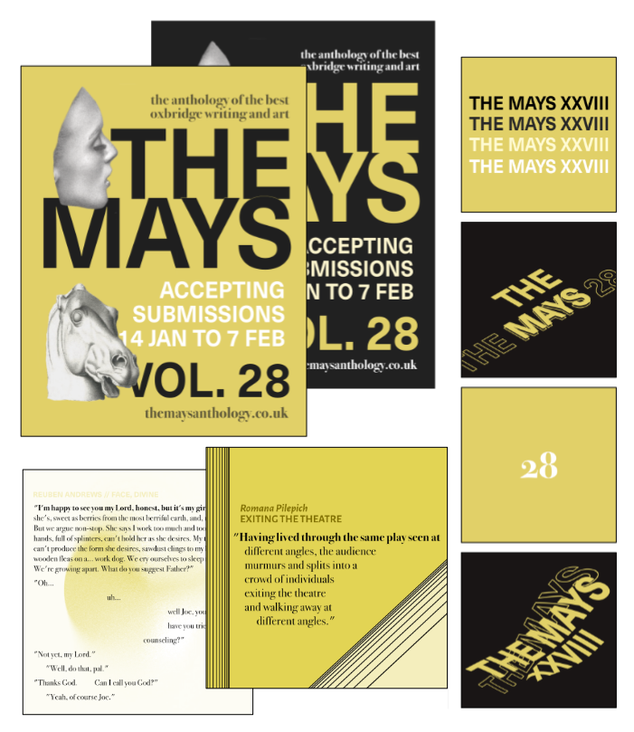
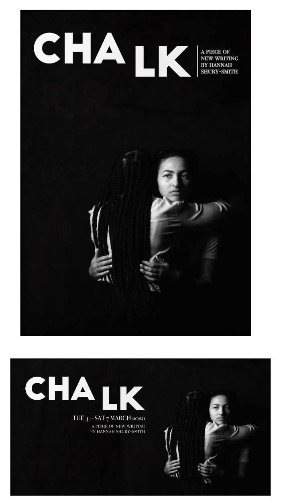
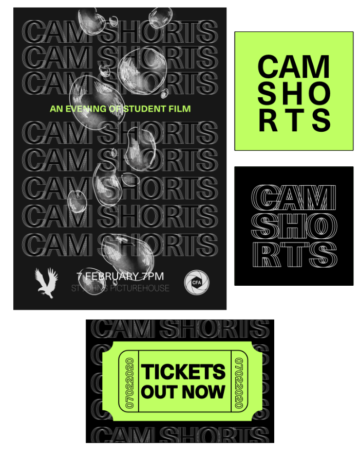
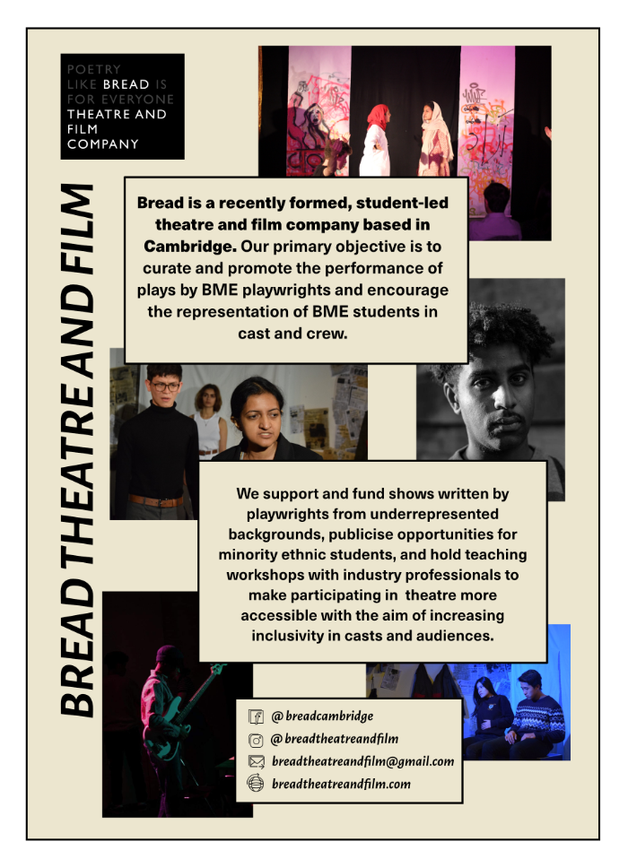
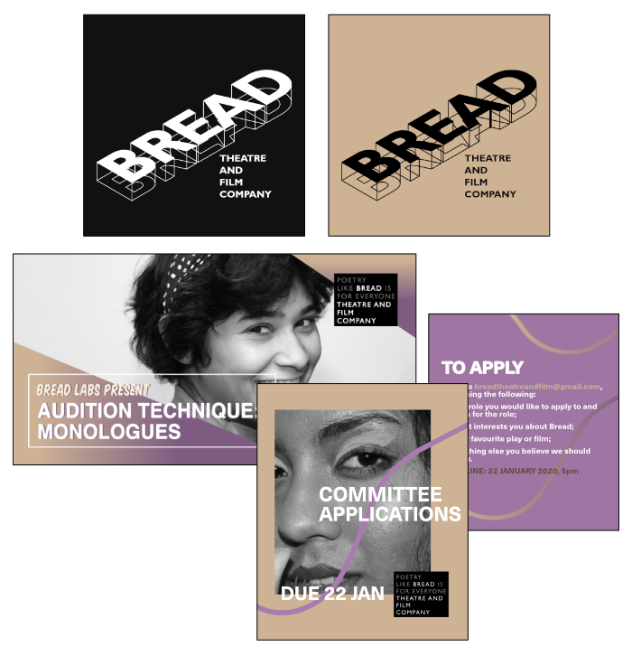
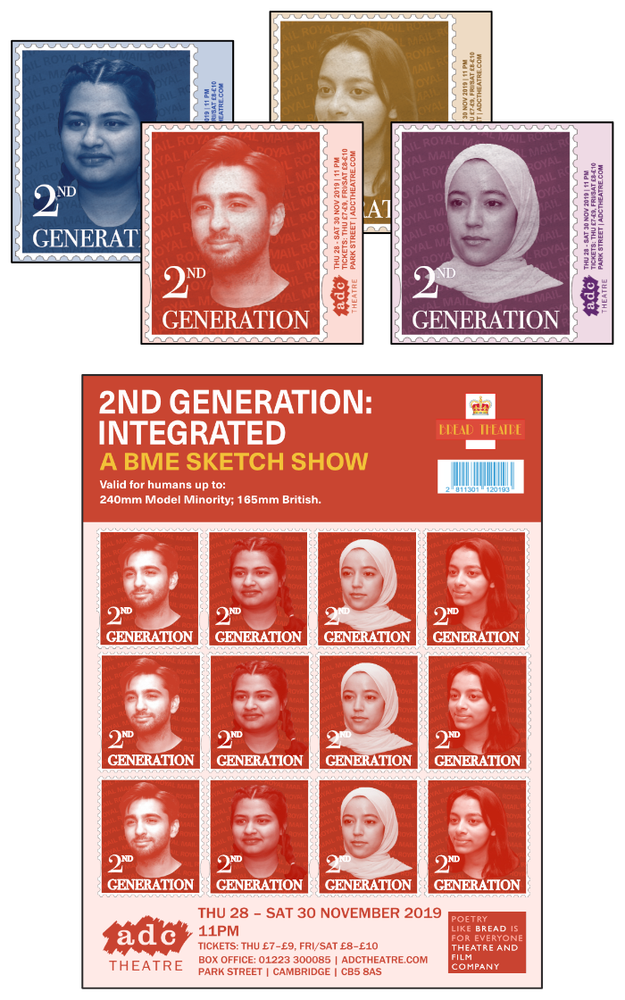
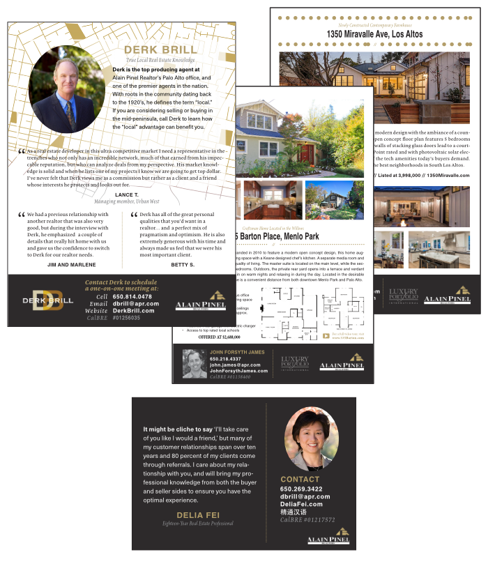
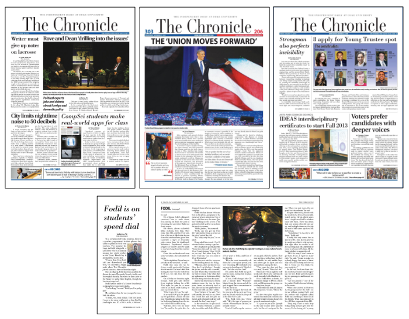
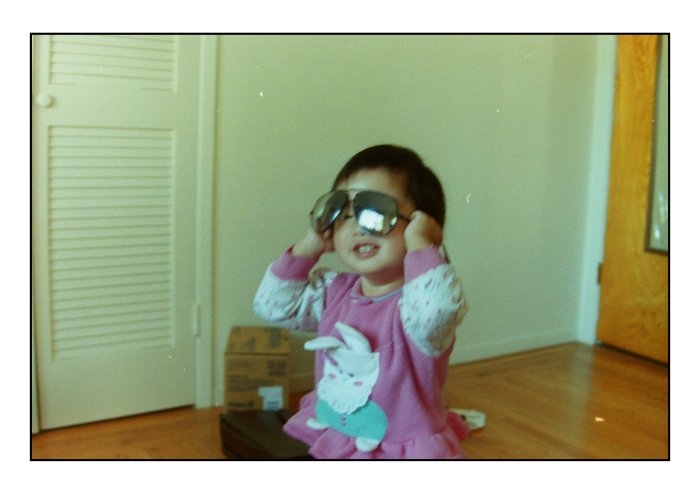

Hello! I am a writer and designer intersted in government regulation and the impact of art on society. I've written for Today in Tabs and designed for The Mays. I hold a BA in History and Politics from the University of Cambridge (2018-2021) where I submitted final degree work on the governance of Late Imperial Russia from 1905-1917 and US-Chinese contention in Antartica and the Southern Cone.
2021 Interned at the media newsletter Today in Tabs where I wrote on topics such as:
> The King's Living Image and COVID Catholicism
> The Mochizuki Conjecture and angry academics
> Domestication Syndrome and internet animal photos
> The third arm in neuropsychology and military projects
> Coffee and modernity in Bangalore
2012-2014 Wrote and copyedited articles as a writer and staff editor at the Duke University Chronicle.
> Narrative feature article written about a late night cab driver.
> News article on a pastor-led protest
2019-2020 Cover design and 200 page interior for volume 28 of the Cambridge and Oxford literary and art journal The Mays.

Publicity visuals to solicit submissions utilising art from the previous issue.

2020 Poster and flyers created for the ADC play Chalk.

2020 Poster and logo created for the Cambridge Short student film festival.

2020 Poster the ADC Theatre standup show Hijabi to Hoejabi to Nojabi.
2019-2020 Design and materials for a theatre company focused on funding and producing diverse shows.


2019 Stamp themed print campaign for the ADC Theatre stage show Second Generation. Sticker set (instead of flyers) and A1/A3 posters.

2015-2017 Sample of print advertising work created for agents at Alain Pinel Realtors based on a standard house style.

2012-2014 Designed various issues of the Duke Unversity Chronicle as a member of the design staff. 
I was born in Sunnyvale, California during the spring of 1994. Since then I have lived in Oregon, North Carolina, Shanghai, and England. I enjoy deep dives into niche subjects, luchadores, and wide-legged trousers.

CONTACT lindajwyu [at] gmail.com